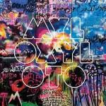
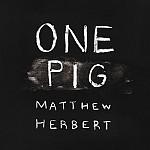

Music Reviews
-

Björk Biophilia
Biophilia is a multimedia event, with bespoke instruments, live shows, workshops and a suite of iPad and iPhone apps. But, more importantly, is it any good?
Gary McGinley reviews... -

Prince Rama Trust Now
Brooklyn-based psych duo's fifth album of freak outs and incantations. Authentic it is not, but does that matter?
David John Wood reviews... -

Coldplay Mylo Xyloto
Having passed the decade barrier, Coldplay has achieved bigger-than-life status with their rapturous anthems without an ounce of pretension. With speculation of this being their last, their latest might be the result of a long-standing act struggling to retain that success.
Juan Edgardo Rodríguez spray paints a big, fat smile... -

The Mekons Ancient & Modern
The Mekons still got it, and still get it
Alan Shulman reviews -

Matthew Herbert One Pig
Taking the sounds of a pig from birth to butcher and making an album out of it? It might be an original idea, but it seems to be in rather pork taste. That's not stopped Matthew Herbert from doing it for his latest sample-based album though. Is he capable of trotting out a classic, or will it just be a bit of a pig's ear?
Mark Davison has used up all his pig puns in this preamble... -
High Places Original Colors
Original Colors, or, High Places in Transition
Michael Iovino reviews... -
Dessa Castor, The Twin
Underappreciated indie-rapper Dessa re-works her songs with live instrumentation, showcasing the full range of her vocal and storytelling talents.
Stephen Wragg reviews... -
The Besnard Lakes You Lived in the City EP
The Besnard Lakes follow the acclaim of The Besnard Lakes Are the Roaring Night with a four-song collection of multipurpose music.
Sean Caldwell reviews... -
Erasure Tomorrow's World
Erasure's new album brings an end to their 4 year hiatus.
Gary McGinley reviews... -

Feist Metals
In the period following the release of The Reminder, and her soundtracking an at first adorable then kind of annoying iPod Nano advert, it started to look like Feist would never get round to recording a follow up. But she has, and it's here. Although, with four years being the equivalent of an eternity in pop music, it can't be worth that long a wait surely?
Mark Davison is happy to report that it is...